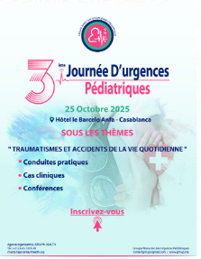

GMUP
Groupe Marocain des Urgences Pédiatriques
Former, harmoniser et faire reconnaître la médecine d’urgence pédiatrique au Maroc.
Lire le mot de la PrésidenteMot de la Présidente
La médecine d'urgence en pédiatrie n'est pas encore reconnue comme sous-spécialité au Maroc, comme c'est le cas dans des pays anglophones et certains pays européens.
Toutefois, certains Centres Hospitaliers Universitaires marocains, notamment les plus anciens, ont ressenti l'importance de la mise en place d'un Service d'Accueil des Urgences Pédiatriques (SAUP) avec une équipe aussi bien médicale que paramédicale dédiée uniquement à l'accueil et à la prise en charge des enfants consultants en urgence.
Cette individualisation des locaux et du personnel pour les urgences pédiatriques ne s'est pas accompagnée par l'élaboration des normes concernant la définition des rôles (service des urgences et services d'hospitalisation), de l'architecture des locaux nécessaires, de l'organisation interne selon le niveau des soins demandés, ni de la définition des profils (médical et paramédical) qui devraient y travailler.
Les pédiatres des urgences se sentent souvent dépassés et non valorisés, malgré les efforts énormes qu'ils fournissent ; seuls ceux qui y travaillent le savent. Il y a heureusement de jeunes médecins qui demandent à se former pour pouvoir identifier les vraies urgences, les prendre en charge rapidement et d'une façon adéquate.
La création du Groupe Marocain des Urgences Pédiatriques (GMUP) est venue répondre essentiellement à ce besoin en formation, et vise à réunir les différents pédiatres et urgentistes qui s'occupent de la prise en charge des urgences pédiatriques. Cette action sera bénéfique grâce au partage des expériences, à l'harmonisation des protocoles et procédures de prise en charge, et à l'élaboration de référentiels nationaux avec les sociétés savantes et les instances responsables. Tout cela permettra certainement de valoriser l'activité des services des urgences, d'identifier les points de force et de faiblesse et d'améliorer la prise en charge des enfants malades dès leur arrivée dans un service d'urgences.
Nous espérons, qu'avec l'effort de tous, faire reconnaître la médecine d'urgence en pédiatrie en tant que sous-spécialité pédiatrique et la rendre plus attractive.
3ème Journée d’urgences pédiatriques
Affiche de l’édition 2025 et best-of de la journée SAUP Casablanca.

Best of — Journée d'urgences pédiatriques, SAUP Casablanca · Octobre 2023
Le Bureau
du GMUP
L'équipe élue qui porte les décisions et les projets du groupe.
- Présidente W. Gueddari
- Vice-Présidente N. Dini
- Secrétaire Générale L. Karboubi
- Secrétaire Générale Adjointe W. Kojmane
- Trésorier N. Mekaoui
- Vice-Trésorier W. Lahmini
Conseillers
M. Borrous · M. El-Bouz · Y. Jeddi · Fz. El Amrani Idrissi · N. Benbouziane